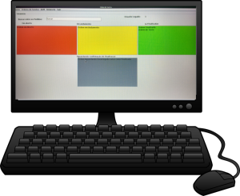

Facilite para seus funcionarios.
Com o SS eles sabem o que tem que fazer e como relatar os seus trabalhos com facilidade

Um programa para controlar, gerenciar e acompanhar o desempenho de seus funcionarios, onde eles vão conseguir ver os problemas, iniciar os serviços e você pode acompanhar e administrar o que eles estão fazendo no momento.
Gerenciar as ordens finalizadas, buscar rapidamente se determinado problema ja foi resolvido e ou está pendente, e muito mais.